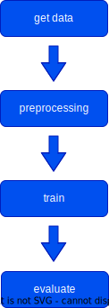
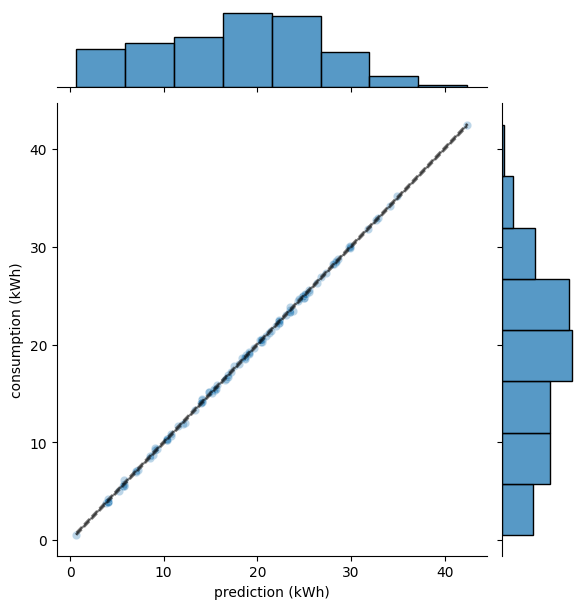

Description of the workflow and its components:
The machine learning workflow is described by the dvc.yaml file under each building folder. For example, the workflow for te demo_school is buildings/demo_school/dvc.yaml.
Each machine learning workflow is split into several steps that are executed sequentially, as illustrated by the following graph:

Each step executes a python script, which can be found under thermo/stages passing a set of parameters specific for that building, stored in the params.yml file (buildings/<building_name>/params.yaml) and produces some files that are stored under the data/ or model/ folder (buildings/<building_name>/data and buildings/<building_name>/model).
In the following we describe the content of each script and what the parameters involved are. The specifics on how it works can be found in the API reference of this documentation.
Get data
This script takes data from different data sources, stored as csv files under assets/, selects the relevant subset of data.
This involves things like the specific building, the year or the measure_point for the energy sources. It then formats the data into a row per time stamp with a column per room and add columns with energy information.
Takes in:
.csvfiles underassets
Outputs:
raw_data.pklunder thedata/folder for the building
Parameters:
## General parameters for the workflow
building: demo_school # name of the building as in the data file
municipality: demo_municipality # name of the municipality as in the data file
year: 2022 # year of the dataset used
## Parameters specific to get_data.py step
get_data:
files: # list of files with data. Each must contain a name, filepath and parse_params
- name: bookings
file_path: assets/demo_bookings.csv
parse_params:
drop_empty_rooms: true
aggregation_method: binary
- name: energy
file_path: assets/demo_energy.csv
parse_params:
measure_points:
- 12892834
measure_types:
- electricity
params.yaml for get_data must be described by a name, a filepath and a parse_params "dictionary" with the parameters to parse.
- name: The type of information in the file, currently only bookings and energy are implemented.
- file_path: Path to the
csvfile containing the data relative to the main directory of the repository. - parse_params: additional parameters to parse the file. These parameters will depend on the type of file.
- parse_params for bookings files:
drop_empty_rooms: boolean. Weather to create columns for rooms that have never been booked or not.aggregation_method: This can bebinaryorfractional. Binary will assign 1 if the room was booked and 0 otherwise. Fractional will assign the percentage of the time slot during which the rooms was booked (fx: if the room was booked between 17:30 and 18:00, it will assign 0.5 to the that room for the time slot 17:00-18:00)
- parse_params for energy files:
measure_points: List of measure points whose energy measure is included in the ML dataset.measure_type: Type of measurement (electricty, water, ...) as spelled in the dataset.
- parse_params for bookings files:
Preprocessing
This script takes care of the feature engineering: it produces the insights we know are there so they can be fed to the machine learning algorithm in the next step.
It takes in the raw bookings and does two main tasks: - Drops data that is not interesting - Feature engineering: simulates the ventilation system.
Takes in:
raw_data.pklunder thedata/folder for the building
Outputs:
preprocessed_data.pklunder thedata/folder for the building
Parameters:
## Parameters specific to preprocessing.py step
preprocessing:
booking_hours_threshold: 0
drop_nights_and_school_hours: true
ventilation:
is_day: true
booking_hours_threshold(int): rooms that have been booked less hours than this threshold will be dropped by the pipeline.drop_nights_and_school_hours(bool): IfTruedrops the hours between midnight and the start of the booking period (this hour is defined inthermo/config.py)mock_ventilation: can beis_day:Trueoris_on:True:is_on:Trueresults in one hot encoding of whether the ventilation is onis_day:Trueresults in a distinction between if the room was booked or it wasn't but the ventilation is in day mode.
Train
Train a linear regression to extract the cost of booking each room from the data. The model is trained using n-fold cross validation and grid search to decide the value of the \(\ell_2\) regularization( see documentation for ridge regression) that best fits the data.
Takes in:
preprocessed_data.pklunder thedata/folder for the building
Outputs:
model/model.joblib: File containing the model, makes it possible to use it to predict things later.model/model.metadata: Summary of the model chosen using cross-validation. Human readable.model/cross_validation.csv: Table with the full information about all cross-validation experiments.
Parameters:
## Parameters specific to preprocessing.py step
train:
target: electricity # name of the target variable
estimator: RidgeRegression # name of the regression algorithm
cv_folds: 5 # number of cross validation folds
alpha_min: 0.01 # min L2 regularization for grid search
alpha_max: 100 # max L2 regularization for grid search
RidgeRegression is supported as estimator.
Evaluate_model
This script validates the results of the rest of the workflow and produces plots and charts so that the quality can be further evaluated by the user.
It doesn't take any parameters.
Takes in:
preprocessed_data.pklunder thedata/folder for the buildingmodel/model.joblib: File containing the model, makes it possible to use it to predict things later.model/cross_validation.csv: Table with the full information about all cross-validation experiments.
Outputs:
model/train.json&model/test.json: Train and test metrics (\(r^2\) and RMSE) for the optimal hyperparameters, as averaged over cross validation folds.model/costs.csv- Extracts the costs of heating and keeping warm the rooms of the building and validates the result.model/error_distribution.png- plots the error distribution of the fit. The prediction for all points is the test set prediction from fold where that point was in the test set. Here is the result on the demo data set.

model/regularization.png: plot of the result of the grid search for the regularization.